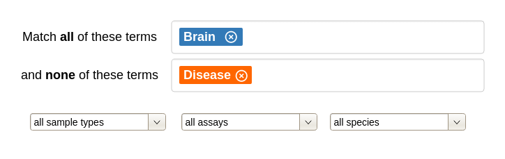
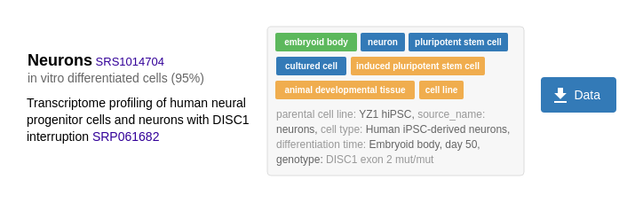
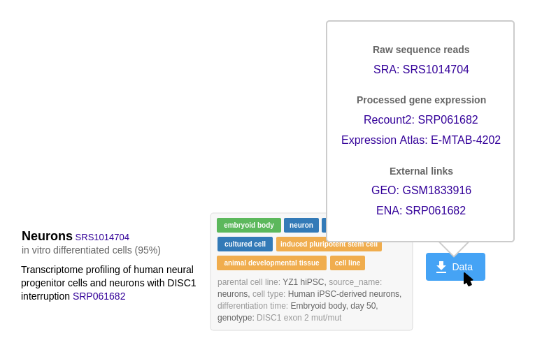
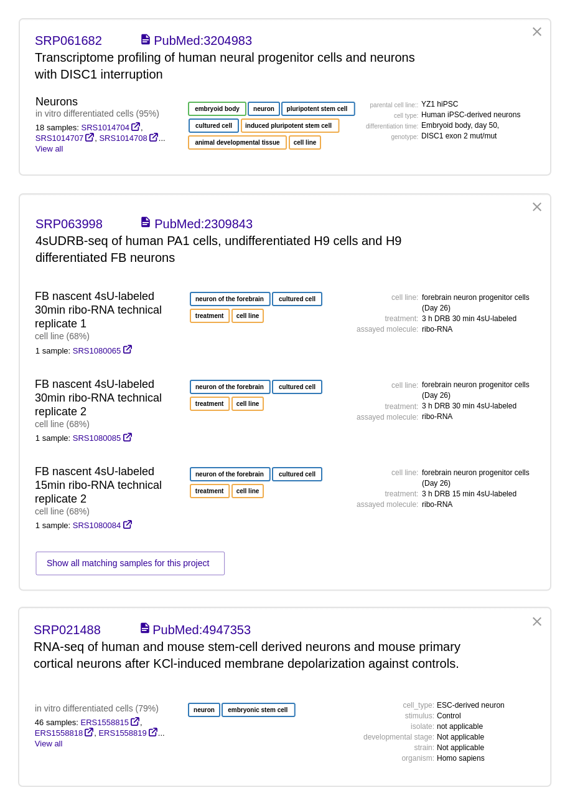

autocomplete - color coded
Sometimes the same term appears in different ontologies. One way to cope with this is to keep them all separate, and show them as different terms, maybe with color-coding to distinguish between different ontologies. This might be a usability headache though - the user might not know which ontology to pick? But merging the terms might create a lot of complexity also.
query builder
Because ontology terms are not uniquely identifiable by the actual text, it's probably a good idea to use discrete tags to represent query terms instead of free text. When you select an item via the autocomplete, it adds a tag, similar to entering email addresses in Gmail.
This shows one way to allow OR's in boolean queries while avoiding the complexity of nesting.
ontology term tags
Could we use only one search box, and let users click on and off terms to requrire/exclude them?
This seems tricky to me because we need to visually distinguish between 2 behaviors: deleting the search term, and excluding samples matching this search term (a NOT search.)
(This idea borrowed from the ENCODE search https://www.encodeproject.org/search/?searchTerm=stem+cell )
sample type filter 2

Something like this is cleaner if we have more fields to filter by
examples
Showing some good examples on the home page could be really helpful for making our first impression and explaining to the user how to use the tool.
This 2-line description wouldn't be appropriate if we decide we're only targeting bioinformaticists, but something as simple as this might be good if we're also targeting less-technical users.
The visual hierarchy of the page needs a lot of work - the colored examples shout too loudly.
result row 1

I want to take the results table in this direction, but I'm afraid this is a little too minimal - not everything is self-explainatory. (It's probably not clear that the 95% is the confidence for example.)
Other things we might want to show, not included in this mock:
+ ID's to other databases: biosample, GEO ID's for experiments, European Nucleotide Archive (same ID's as SRA)
+ metadata from experiments for RNA seq: bulk vs single cell, type of RNA (mrna, +sRNA, long noncoding RNA, total RNA), -- the user will likely want to filter on these
What do we show if a sample has 2 associated experiments, show 2 rows?
result row 1 - data download popover

Will it be cumbersome to the workflow to hide the external links behind the button? It helps with clutter, but a lot of people will be using this functionality pretty frequently.
I'm not sure if people will expect to look here for the external links.
Can we link directly to the paper on PubMed or PMC?
result row 2

Trying to use the download icon to show that these links have downloadable data - not sure if this will make sense to users.